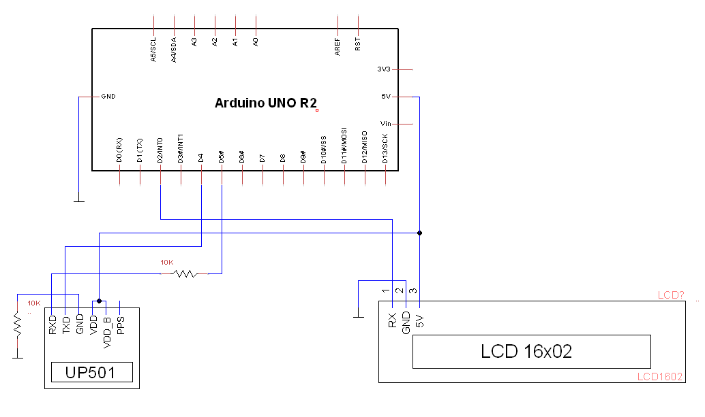

GPS/Arduino Powered Speedometer
 You can easily interface a GPS chip like this one with an an Arduino micro-controller and make some pretty cool projects. I decided to make a simple speedometer/odometer for my bike. For this to work, we need to retrieve the relevant data from the GPS module, then process it using the Arduino before outputting it to the LCD screen. The device will also need to be powered by a battery so we can carry it around freely.
You can easily interface a GPS chip like this one with an an Arduino micro-controller and make some pretty cool projects. I decided to make a simple speedometer/odometer for my bike. For this to work, we need to retrieve the relevant data from the GPS module, then process it using the Arduino before outputting it to the LCD screen. The device will also need to be powered by a battery so we can carry it around freely.
How do we get output from the module? The receiver chip has two serial pins which send and receive data, both of which are connected to ports on the Arduino that have been programmed to send(TX) and receive(RX) serial data. By default, the module outputs data in NMEA format. NMEA data consists of strings of sentences, the first word of which defines the values of the rest of the string. Here is an example of a single sentence of NMEA data:
$GPRMC,092751.000,A,03424.698,N,11951.976,W,0.06,31.66,280511,003.1,,,A*45
Where:
GPRMC indicates the type of output sentence (stands for GP Recommended Minimum)
092751 is the time taken at 9:27:51 UTC
A Status = Active (Alt V = Void)
03424.698,N Latitude 34 degrees 24.698 minutes North
11951.976,W Longitude 119 degrees 51.976 Minutes West
0.06 Ground speed in knots
084.4 Track angle in degrees
280511 Date 28th of May 2011
003.1 Magnetic variation
A*45 Checksum
In this case, we are only really interested in the speed data which lies behind the 7th comma in the string. We can write some code to parse the string with this in mind. Pretty simple!
/*parses through NMEA string using commas as delimiters */
void dataParse(int section) {
char nextChar;
int commas = 0;
resetReturn(); /*Reset method*/
for (int x = 0; x <= dataStr.length(); x++) {
nextChar = dataStr.charAt(x);
if (nextChar == ',') { /*If comma is found, increment comma counter and continue*/
commas++;
continue;
}
if (commas == section) { /*"section" refers will be equal to 7 for our purposes. If commas = 7, we have arrived at the speed data */
returnStr.concat(nextChar);
}
else if (commas > section) { /*After we have passed the speed data, we start over on the next string*/
break;
}
}
}
Following that, the arduino can do a bit of formatting and output this to our LCD screen. I will admit that the code that got this to work is pretty messy (I wrote it with basically no programming experience when I was in college), but it gets the job done. You can find a link to the entirety of the soruce code HERE. It isn't really very complicated, and I imagine its something very similiar to what you would use to get an arduino talking to other more modern gps modules.
Additionally, here is a basic schematic for how I hooked everything up. Line crossing do not indicate connections. ONLY the dots do...

I'll add that there are a few problems with the project that I never had time to solve. Maybe you may want to?
1. What to do when the module isn't communicating with satellites.
When the module gains power, it takes a little while to start outputting valid strings. This is because it takes time for it to acquire enough satellites to construct its data string. During this start-up time, nothing about our code works, because it is trying to parse a string that is essentially nothing but commas. Once the module starts outputting valid strings, the LCD starts showing us what we want. There is probably a more elegant way to check to see if the module is properly connected to enough satellites. Maybe something on the display to indicate it is still connecting?
2. Power consumption
On a brand new 9V battery, this device dies after only about 4 hours of use. Yikes! I think you could probably make this last a lot longer if you put a resister on the ground pin of both the arduino and the LCD screen. 4 hours is not really very useful. Also a button which could turn off the device while saving odometer data might be good too.
3. Small speed problems
The chip was basically accurate in its output, but sometimes I noticed that it was giving bad readings. I noticed this especially when I was standing still and it was reading a small .5 mile-per-hour speed! This caused the odometer to gain miles even when I tinkering with it in my chair. Not good. My quick fix was to define a minimum speed which needed to be exceeded before it registered any speed at all. I chose .75 MPH. Perhaps there is a better way to deal with this.
4. Housing/Portability
I strapped this onto my bike with zip ties and a duct tape. To be fair, it worked everyday for the whole summer! But an actual printed circuit board inside of a protective case was badly needed.
Bonus:
Here is a really bad video of the speedometer working in action! (the odometer hadn't been implemented yet). Here see me gingerly driving down an empty road while trying to hold my camera phone steady. No one was hurt I promise!
Note: in this video the refresh rate was set to 1Hertz